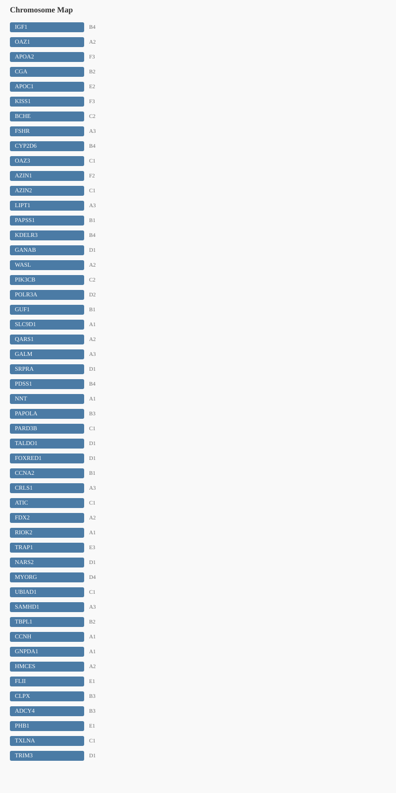
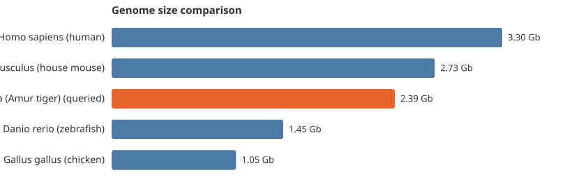

Query: Amur tiger
Scientific name: Panthera tigris altaica (Amur tiger)
Common name: Panthera tigris altaica (Amur tiger)
Assembly ID: GCF_000464555.1
Confidence: 0.5
Status: ✓ resolved
Assembly: GCF_000464555.1 Assembly level: Scaffold Genome size: 2,391,082,183 bp (2.39 Gb)
Showing first 20 of 50 genes (50 in gene_list)
| Gene | Location | Function |
|---|---|---|
| IGF1 | B4 | insulin like growth factor 1 |
| OAZ1 | A2 | ornithine decarboxylase antizyme 1 |
| APOA2 | F3 | apolipoprotein A2 |
| CGA | B2 | glycoprotein hormones, alpha polypeptide |
| APOC1 | E2 | apolipoprotein C1 |
| KISS1 | F3 | KiSS-1 metastasis suppressor |
| BCHE | C2 | butyrylcholinesterase |
| FSHR | A3 | follicle stimulating hormone receptor |
| CYP2D6 | B4 | cytochrome P450 family 2 subfamily D member 6 |
| OAZ3 | C1 | ornithine decarboxylase antizyme 3 |
| AZIN1 | F2 | antizyme inhibitor 1 |
| AZIN2 | C1 | antizyme inhibitor 2 |
| LIPT1 | A3 | lipoyltransferase 1 |
| PAPSS1 | B1 | 3'-phosphoadenosine 5'-phosphosulfate synthase 1 |
| KDELR3 | B4 | KDEL endoplasmic reticulum protein retention receptor 3 |
| GANAB | D1 | glucosidase II alpha subunit |
| WASL | A2 | WASP like actin nucleation promoting factor |
| PIK3CB | C2 | phosphatidylinositol-4,5-bisphosphate 3-kinase catalytic subunit beta |
| POLR3A | D2 | RNA polymerase III subunit A |
| GUF1 | B1 | GTP binding elongation factor GUF1 |

| Species | Scientific name | Genome size | |
|---|---|---|---|
| Homo sapiens (human) | Homo sapiens (human) | 3.30 Gb | |
| Mus musculus (house mouse) | Mus musculus (house mouse) | 2.73 Gb | |
| Panthera tigris altaica (Amur tiger) | Panthera tigris altaica (Amur tiger) | 2.39 Gb | ← queried |
| Danio rerio (zebrafish) | Danio rerio (zebrafish) | 1.45 Gb | |
| Gallus gallus (chicken) | Gallus gallus (chicken) | 1.05 Gb |
